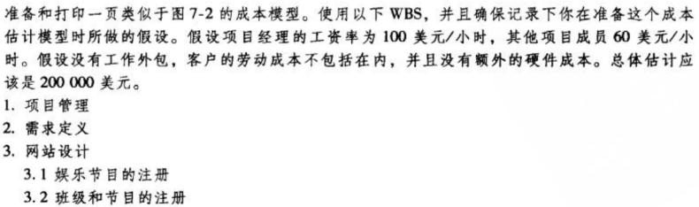
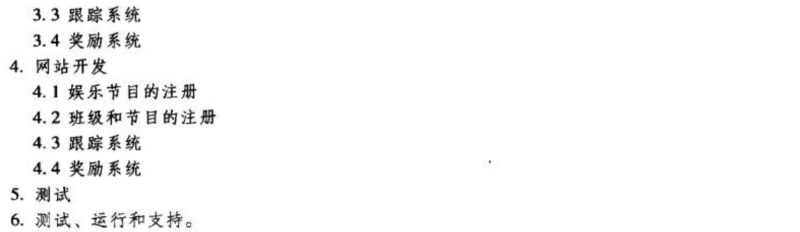
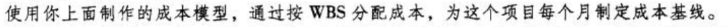
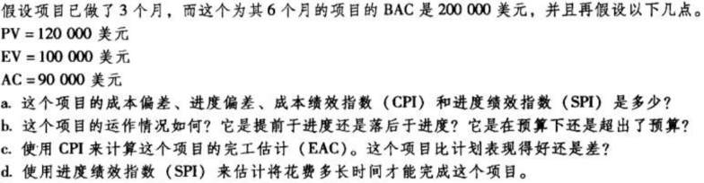

IT项目管理-7
项目成本管理
练习一


| WBS条目 | 数量或小时数 | 单位小时成本（美元） | 子层总和（美元） | WBS 第二层总和（美元） | 占总和的% |
|---|---|---|---|---|---|
| 1.项目管理 | 40000 | 20% | |||
| 1.1 项目经理 | 160 | 100 | 16000 | ||
| 1.2 其他项目成员 | 400 | 60 | 24000 | ||
| 2.需求定义 | 10000 | 10000 | 5% | ||
| 3.网站设计 | 30000 | 15% | |||
| 3.1 娱乐节目的注册 | 50 | 150 | 7500 | ||
| 3.2 班级和节目的注册 | 50 | 150 | 7500 | ||
| 3.3 跟踪系统 | 50 | 150 | 7500 | ||
| 3.4 奖励系统 | 50 | 150 | 7500 | ||
| 4.网站开发 | 80000 | 40% | |||
| 4.1 娱乐节目的注册 | 100 | 200 | 20000 | ||
| 4.2 班级和节目注册 | 100 | 200 | 20000 | ||
| 4.3 跟踪系统 | 100 | 200 | 20000 | ||
| 4.4 奖励系统 | 100 | 200 | 20000 | ||
| 5.测试 | 160 | 125 | 20000 | 20000 | 10% |
| 6.测试，运行和支持 | 20000 | 20000 | 10% | ||
| 总项目成本估计 | 200000 |
练习二

| WBS条目 | 1 | 2 | 3 | 4 | 5 | 6 | 总和 |
|---|---|---|---|---|---|---|---|
| 1.项目管理 | |||||||
| 1.1 项目经理 | 2500 | 2500 | 2500 | 2500 | 2500 | 3500 | 16000 |
| 1.2 项目团队成员 | 4000 | 4000 | 4000 | 4000 | 4000 | 4000 | 24000 |
| 2.需求定义 | 5000 | 5000 | 10000 | ||||
| 3.网站设计 | |||||||
| 3.1 娱乐节目的注册 | 3000 | 2500 | 2000 | 7500 | |||
| 3.2 班级和节目的注册 | 3000 | 2500 | 2000 | 7500 | |||
| 3.3 跟踪系统 | 3000 | 2500 | 2000 | 7500 | |||
| 3.4 奖励系统 | 3000 | 2500 | 2000 | 7500 | |||
| 4.网站开发 | |||||||
| 4.1 娱乐节目的注册 | 5000 | 5000 | 5000 | 5000 | 20000 | ||
| 4.2 班级和节目注册 | 5000 | 5000 | 5000 | 5000 | 20000 | ||
| 4.3 跟踪系统 | 5000 | 5000 | 5000 | 5000 | 20000 | ||
| 4.4 奖励系统 | 5000 | 5000 | 5000 | 5000 | 20000 | ||
| 5.测试 | 5000 | 5000 | 5000 | 5000 | 20000 | ||
| 6.测试，运行和支持 | 20000 | 20000 | |||||
| 总和 | 23500 | 46500 | 39500 | 31500 | 31500 | 27500 | 200000 |
练习三

a.
CV（成本偏差）= EV - AC = 10000美元
SV（进度偏差）= EV - PV = -20000美元
CPI（成本绩效指数）= EV / AC = 111.11%
SPI（进度绩效指数）= EV / PV = 83.33%
b.
项目的进度落后于预期，花费在预算之内。
因为该项目的进度偏差为负，且进度绩效指数小于1，说明该项目目前落后于进度。该项目的成本偏差为正，成本绩效指数大于1，说明该项目的支出目前在预算内。
c.
完工估计(EAC)=BCA/CPI = 18000美元
按照EAC来判断，比计划表现得好。
d.
完成估计时间 = 开始时间估计 / SPI = 7.2 月
估计将花费 7.2 月才能完成这个项目。